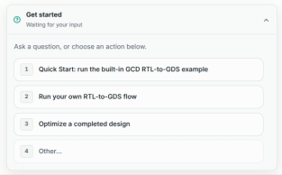

开源物理设计智能体 ECOS Agent
- 为开源工具链 ECOS Studio 构建物理设计智能体，检索领域知识库与 EDA 工具源码，解答流程、算法、参数和指标问题。
- 开发对话式设计向导，收集并校验 RTL 文件、约束和工艺等输入配置，经用户确认后启动 RTL 到 GDS 流程。
- 将自然语言目标转化为待确认的优化计划，在限定参数范围和预算内隔离运行候选配置，记录迭代过程与终态指标。
- 在 GCD 示例中，经过 7 轮调参，布线后线长较默认配置降低约 2.8%，同时通过时序和设计规则检查（DRC）。
